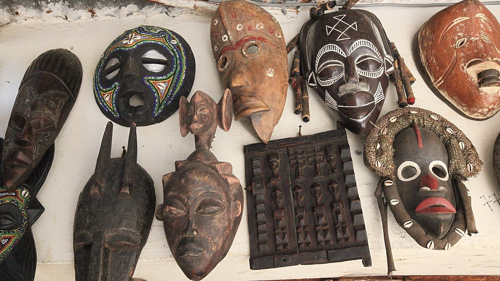
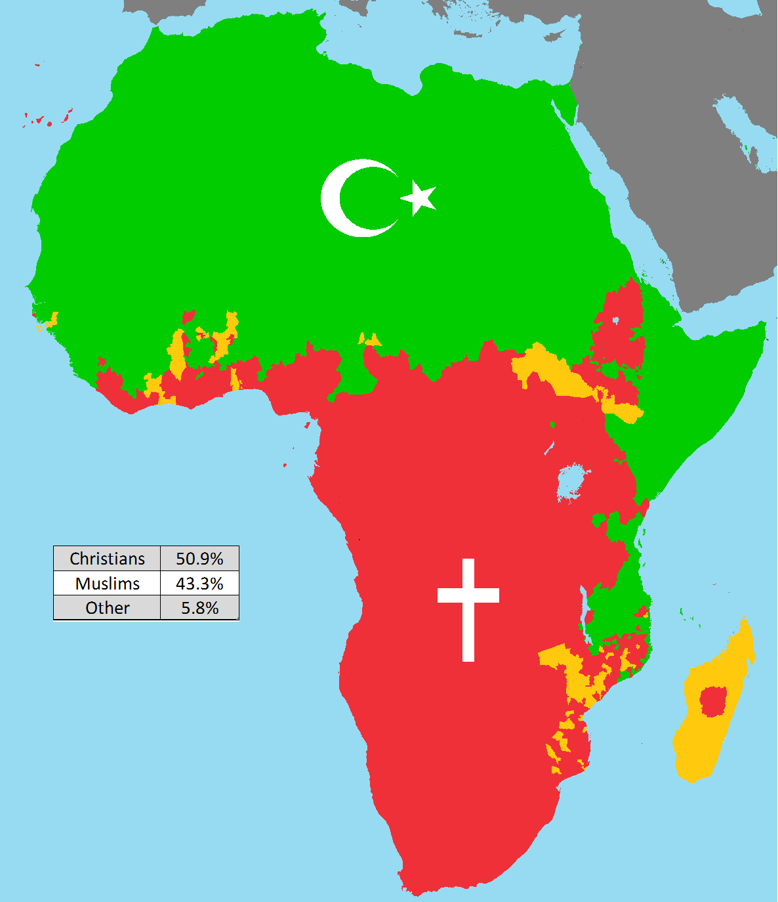
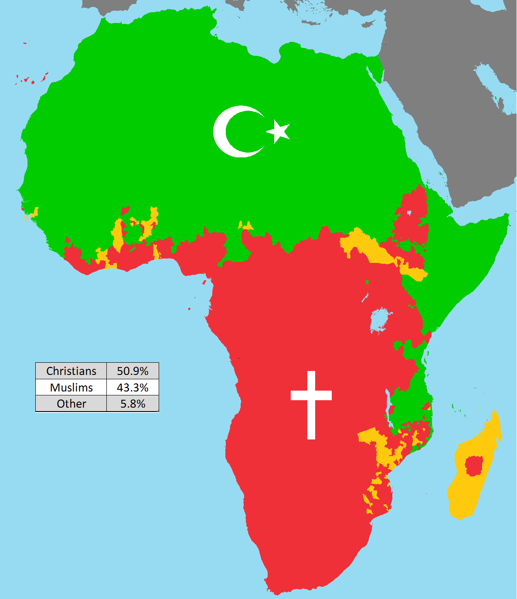

რელიგია აფრიკაში


ტრადიციული რელიგიები
აფრიკული ტრადიციული რელიგიები გვიჩვენებს კავშირს ბუნებასთან, წინაპრების სულებთან და ზებუნებრივ ძალებთან. ისინი ძირითადად რეგიონალურ ხასიათს ატარებს და ბევრ ადგილობრივ კულტურაში ფესვგადგმულია.

ქრისტიანობა და ისლამი
• ქრისტიანობა
აფრიკაში ქრისტიანობა ძირითადად გავრცელებულია სუბსაჰარულ რეგიონებში, განსაკუთრებით ეთიოპიაში, სადაც ქრისტიანული ეკლესია უკვე უძველესი დროიდან არსებობს.
• ისლამი